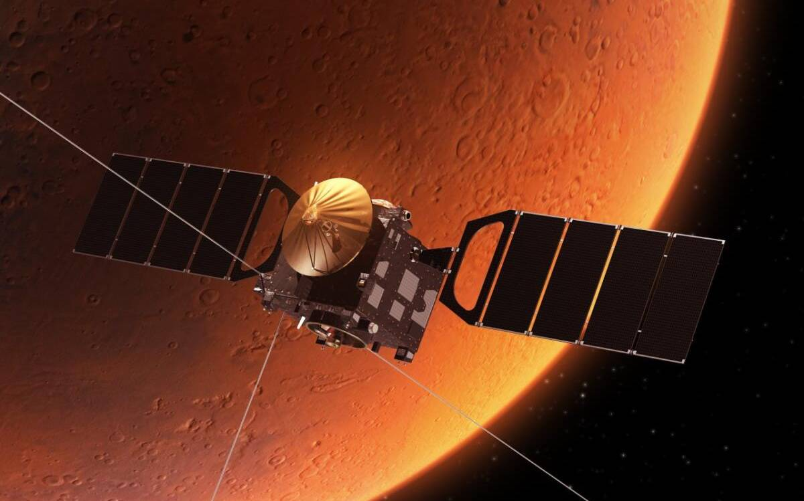
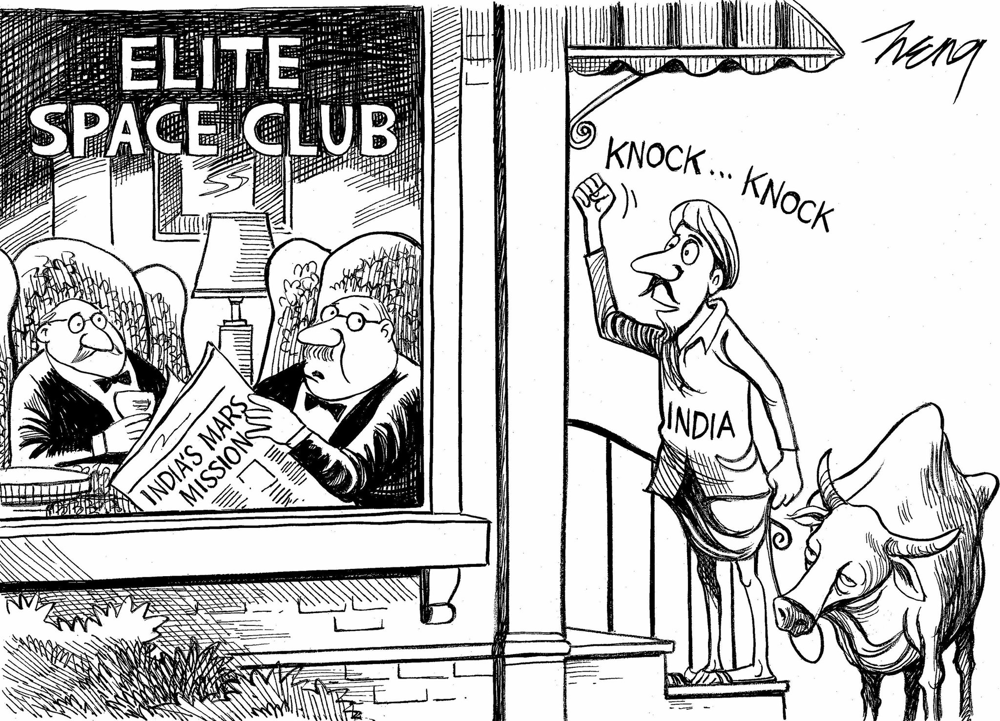

Dr Vikram Sarabhai(img)
12 August, 1919, a legend was born who helped contribute in the Indian Space Research Organisation (ISRO), the father of Indian space program, Dr. Vikram Sarabhai. Little did he know how ISRO would one day silence all those who try to disgrace the people and the country of India.
India set a ambitious target for itself to launch a mission to Mars in just ₹450 crore (USD $73 million), which is less than the budget of the movie, The Martian,a mission which many would have silently laughed at.
Hardly were they aware of the fact that India was going to be the first country in the world to reach Mars in its very first attempt overtaking America, Europe, Russia. On 5th of November, 2013, the mission was launched and on the 24th of September, 2014, the mission became a success.
It just seemed as if it was hard for some people to accept this and appreciate the achievement.
This is how the New York Times decided to appreciate the achievement of India, unaware of the potential that ISRO had and what it would achieve for India in the future.
Fast forward to February 2017 when The Polar Satellite Launch Vehicle (PSLV) blasted off from India's Satish Dhawan Space Centre at 10:58 p.m EST with three satellites from India and 101 smaller nano satellites from five other countries: the United States, the Netherlands, Israel, Kazakhstan and Switzerland. This number crushes the previous record of 37 satellites sent into orbit aboard a single Russian Dnepr rocket in June 2014.

And India did not forget to send a gift to New York Times.